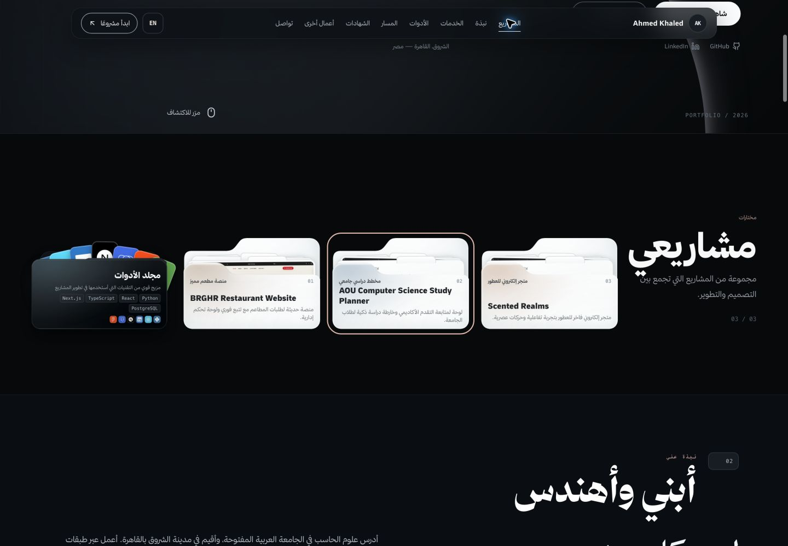

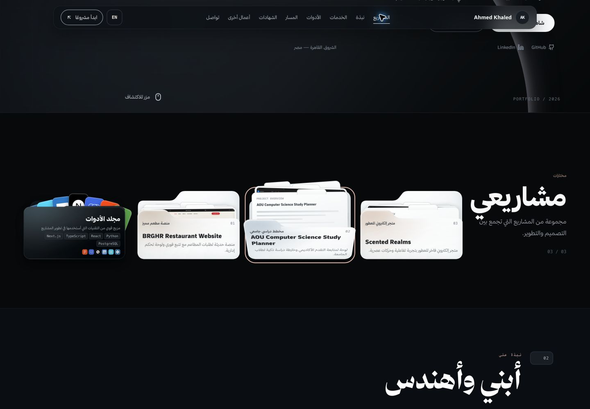
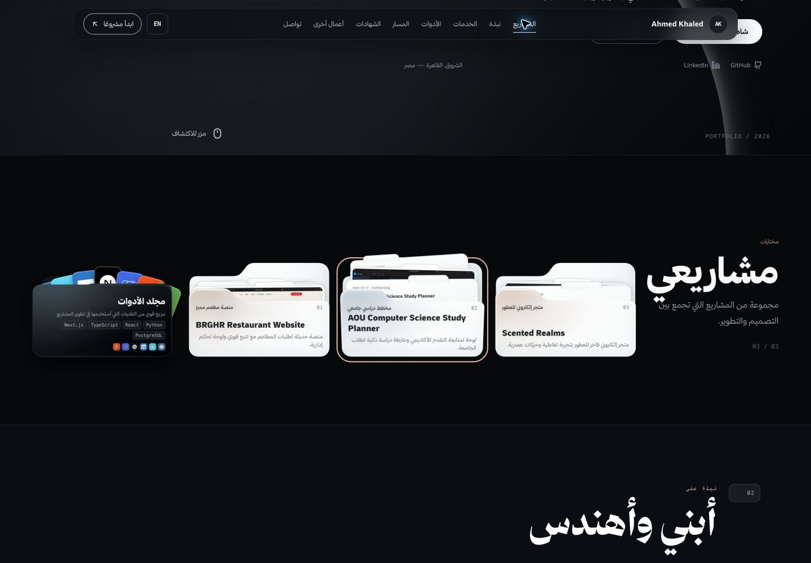
نسخة عمل كاملة من ahmed-khaled-portfolio 3، مع تعديل ملفّي قسم الفولدرات فقط. البناء ناجح، والقبول البصري النهائي جزئي. اقرأ تقرير القبول والقيود.
848×128، 30fps، 300 فريم. تمت مراجعة الفريمات المتتابعة كاملة في عشر لوحات؛ الفريمات 0–29 ثم بقية اللوحات في المجلد. زمن اللقطات المرصودة ليس استعادة لقيم CSS الأصلية.
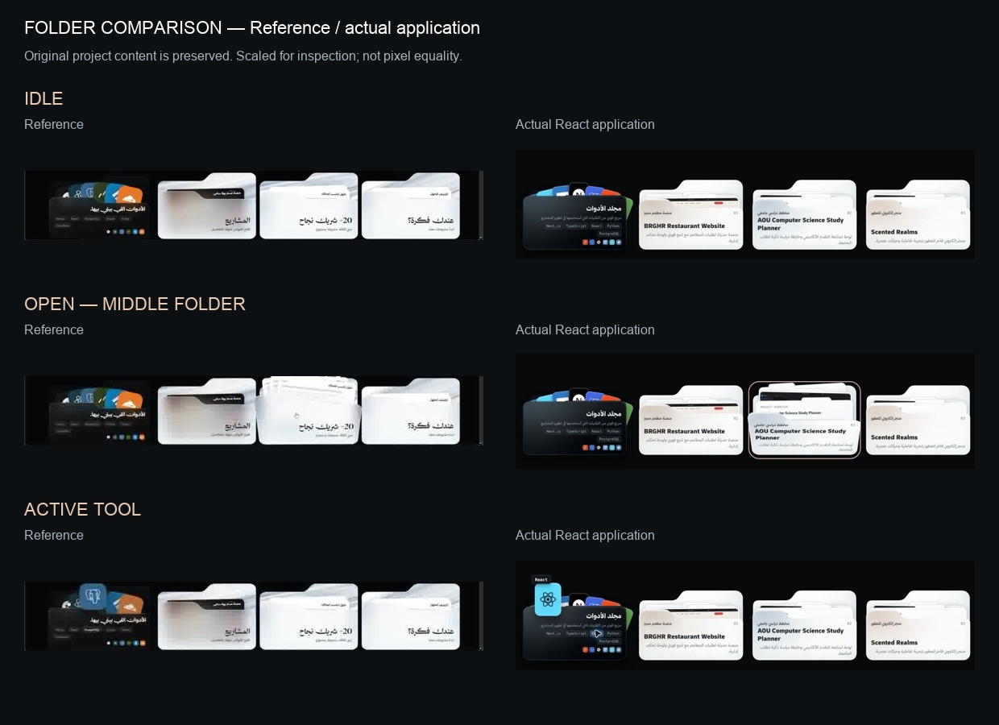
أحجام الصور موحّدة للعرض؛ اختلاف النصوص ومعاينات المشاريع مقصود للحفاظ على بيانات الموقع. هذه ليست نسبة تطابق بكسلي.
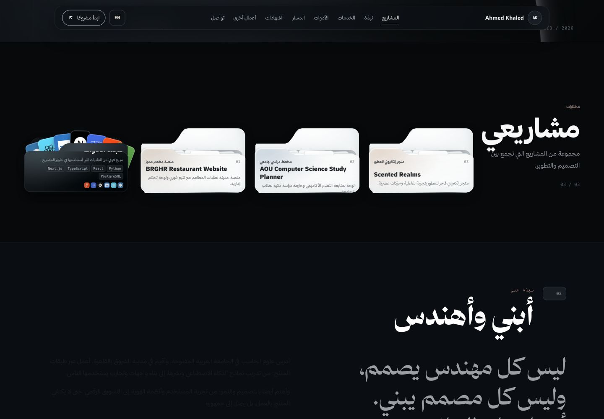
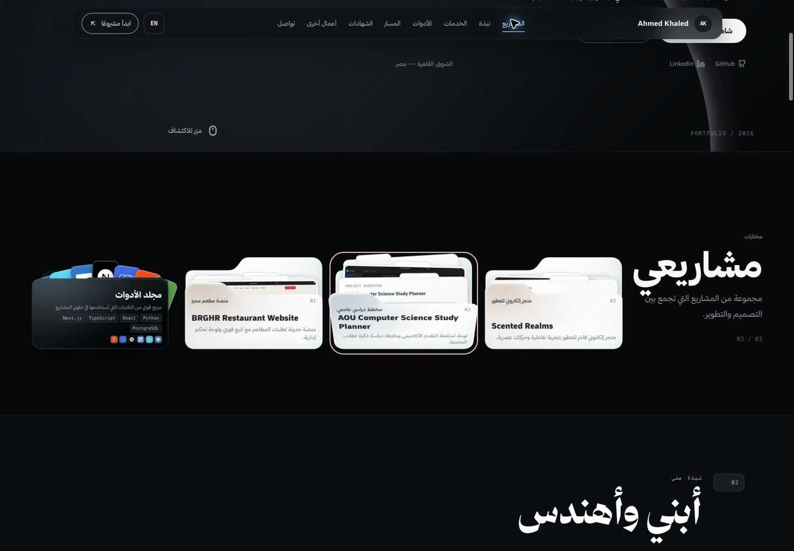
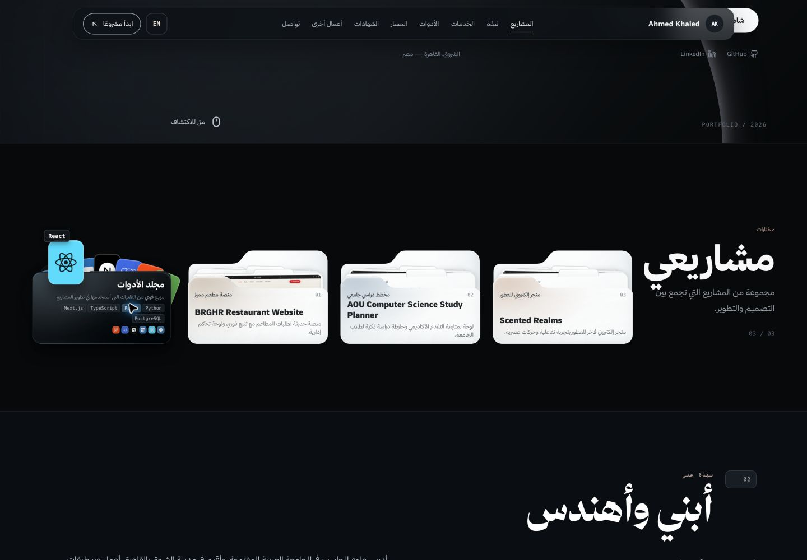
حُفظت الطلبات الزمنية في سجل التوقيت. أول طلب بدأ بعد 145ms واكتمل بعد 501ms؛ زمن التقاط الصورة داخل هذه النافذة غير معلوم. لا نمثل هذه العينات على أنها نقاط 0/20/40/60/80/100% دقيقة.



فحص عرض هاتف داخل Chrome. اختبار اللمس هنا محاكاة لحالة المكوّن؛ لم يُستخدم هاتف فعلي.
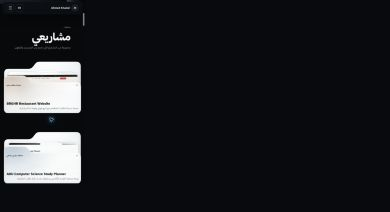
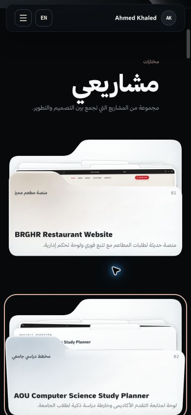
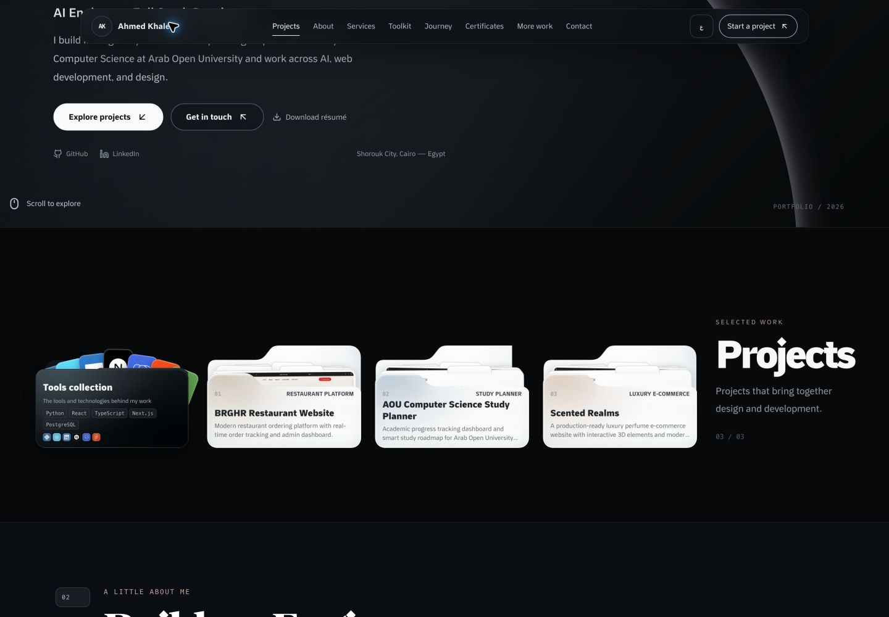
نجح تفعيل اختيار الأداة، وأكد التشخيص وجود التحويلات والأقنعة في الأنماط المحسوبة. ظهرت فروق في اللقطات المرئية؛ لذلك لم يُمنح قبول بصري لـSafari. الصور محفوظة للمراجعة دون ادعاء حل هذه الفروق.
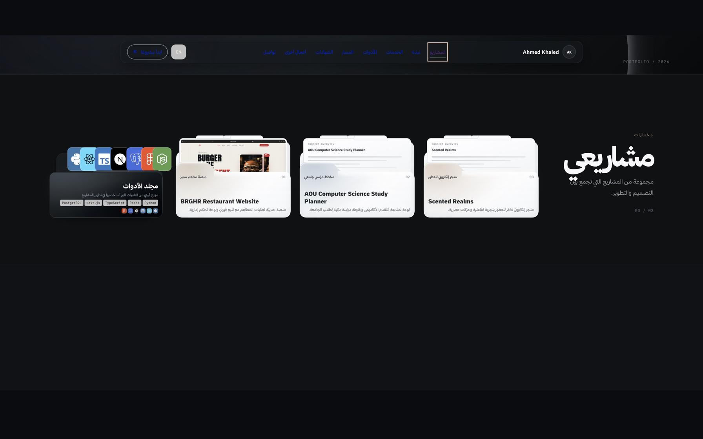
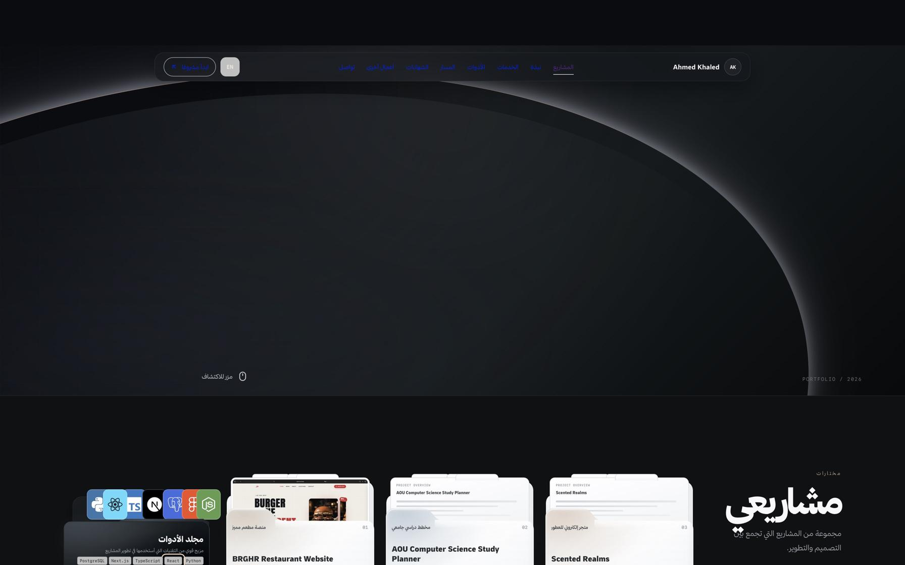
هذا التسجيل سابق لهذه الجلسة، وليس سكرينكاست للتعديل الجديد.